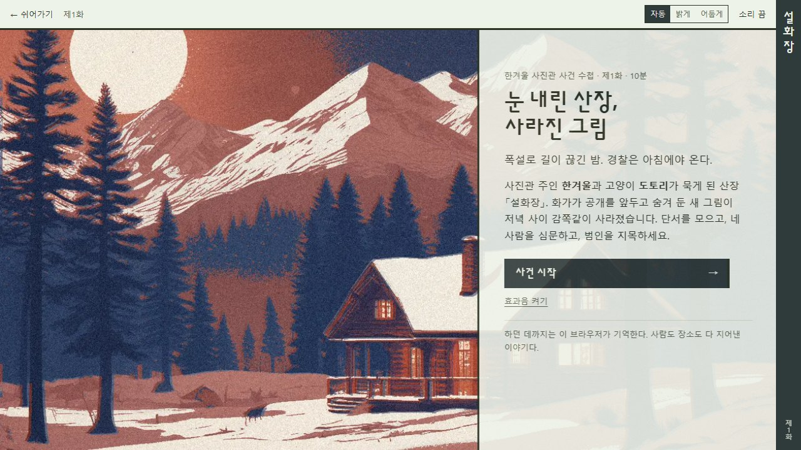
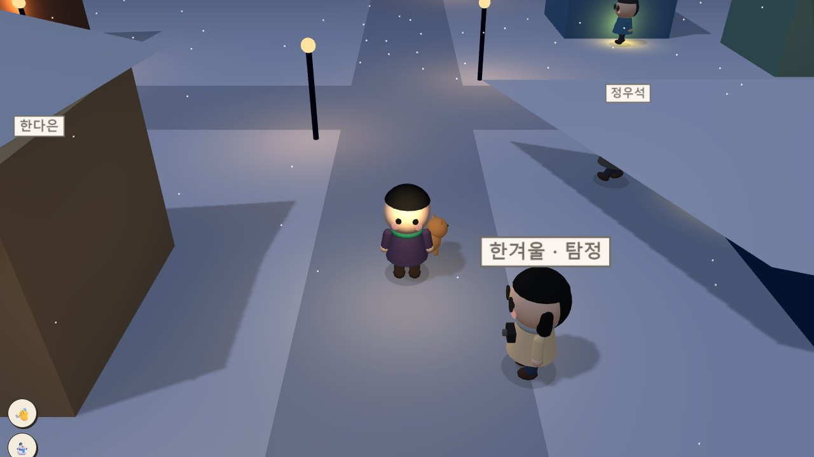
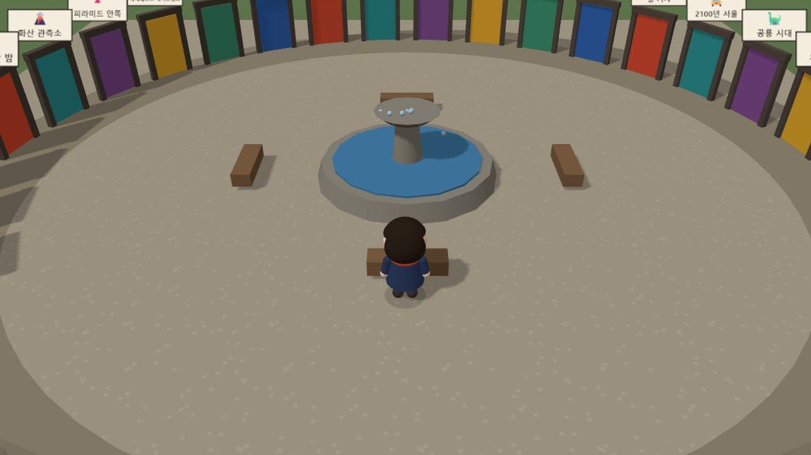

개인이 만든 · 무료 · 가입 없음
귀찮은 일은 PC 가 대신,
쉬는 시간엔 추리 한 판
일을 덜어 주는 Windows 앱 셋과, 브라우저에서 바로 하는 게임 셋. 앱은 내 PC 안에서만 돌고, 게임은 설치 없이 폰에서도 돼요.
- 무료
- 유료판·개수 제한 없음
- 가입 없음
- 계정·로그인 없이 바로
- 앱은 내 PC 안에서만
- exe 하나, 따로 서버 없이
- 게임은 브라우저에서
- 설치 없이 폰에서도
앱 셋 — Windows 10/11
매일 사이트 들어가 확인하는 일
한 번 해 보이면 다음부터 혼자 합니다. 새 주문·공지가 생기면 알려 주고, 정한 시각에 백업도 해 둬요.
업무 자동화 · 예약 · 사이트 감시 · AI 요금 없음

체험단 글을 여러 곳에 따로 쓰는 일
메모 몇 줄과 사진으로 블로그·카페·인스타·스레드·틱톡·쇼츠 글 초안을 한 번에, 내 말투로. 협찬 마감과 받은 돈도 정리해요.
체험단·협찬 블로거용 · 6곳 글 · 마감·장부

Claude Code 한도가 언제 차는지 모르는 일
5시간 구간을 몇 % 썼는지 트레이 아이콘에 숫자로. 한도가 가깝거나, 작업이 끝나거나 나를 기다리면 알려 줍니다. 로그인 토큰은 읽지 않아요.
개발자용 · 트레이 아이콘 · 오픈소스(MIT)

게임 셋 — 브라우저에서 바로
사진관 탐정의 추리 게임
사진관 탐정 한겨울과 고양이 도토리가 되어 장소를 살피고, 사람들을 심문하고, 범인을 지목해요. 한 사건에 10~20분.
추리 · 시즌 1 열 사건 · 번외편·시즌 2 는 PC 앱에서

눈 내리는 3D 마을의 추리
작은 눈마을을 탐정이 되어 걸으며 단서를 줍고, 미행하고, 사진으로 순간을 잡아 범인을 찍어요. 같은 사건을 하는 사람들이 마을에서 서로 보여요.
3D 추리 · 다 같이 걷기 · PC 권장

문을 열면 다른 곳
분수 광장 둘레의 문을 골라 들어가면 포장마차, 남극 기지, 우주정거장, 조선 장터. 장소마다 1~2분이면 끝나는 놀이가 있어요.
3D 미니게임 · 다 같이 걷기 · PC 권장

쉬어가기
앱 말고, 잠깐 쉬어 가는 곳 — 「나는 어떤 일 유형?」·「나의 회의 유형」·「점심 메뉴로 보는 일 스타일」 테스트 · 오늘의 운세 · 타로 한 장